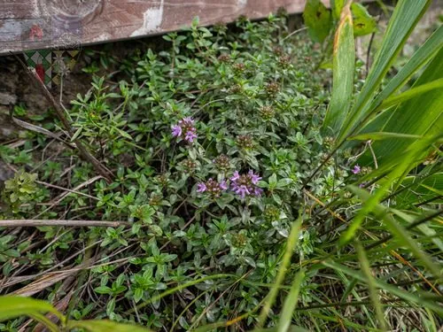

花卉与草本 · 植物界
百里香 Thymus mongolicus

唇形科半灌木香草，叶片细小、香气浓郁，匍匐生长，是烹饪、精油和地被绿化的多用途植物，原产中国北方与蒙古。
- 分类
- 门被子植物门纲木兰纲目唇形目科唇形科属百里香属
- 栖息环境
- 中国北方与蒙古的干旱草原、石质坡地，喜光、耐旱
- 地理分布
- 原产中国北方、蒙古及欧亚温带，中国华北、西北山地有分布
- 保护级别
- 暂无评估
物种志
百里香为唇形科百里香属半灌木，株高 10–25 厘米，茎匍匐或斜升，老枝木质化。叶片细小，卵形至椭圆形，对生，揉碎后散发浓郁香气。轮伞花序密集成头状，花小，淡紫色或粉白色，花期 6–8 月；果实为小坚果。
百里香原产中国北方、蒙古及欧亚温带地区，喜阳光充足、凉爽干燥和排水良好的环境，耐旱耐瘠薄，忌积水和湿热。它茎叶含百里香酚等挥发性成分，是西餐和中餐常用的香草，可用于烤肉、炖汤和腌料，也可提取精油；植株低矮、蔓延性强，还是优良的地被和岩石园植物，开花时吸引蜜蜂。
形态与习性
- 株高10–25 厘米，茎匍匐或斜生
- 花期6–8 月，花小，淡紫色
- 果期花后结小坚果
- 光照极喜光
- 水分耐旱，忌积水
- 土壤排水良好的石灰质沙壤土
- 繁殖扦插、分株、播种
- 主要用途烹饪香草、提取精油、地被绿化
趣味知识
- 百里香叶片细小、香气浓郁，是西餐烤肉和炖汤的常用香草。
- 它含百里香酚等挥发性成分，可提取精油。
- 百里香匍匐蔓延，是岩石园和地被绿化的好材料。
- 开花时花蜜丰富，能吸引蜜蜂等传粉昆虫。